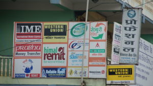
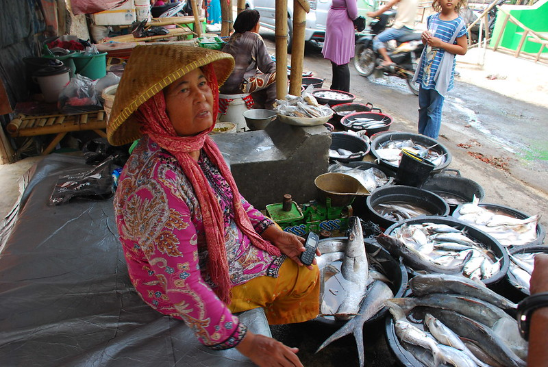
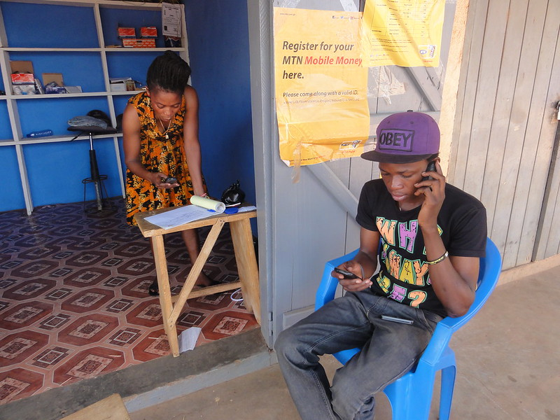

Cryptocurrency
What are cryptocurrencies?
Cryptocurrency is a type of digital or virtual currency that uses cryptography for secure and private transactions and control of new units. Unlike traditional currencies issued by governments (like the US Dollar or Euro), cryptocurrencies are typically decentralized and operate on blockchain technology. It was created in the wake of the 2008 global financial crisis to decentralize the system of financial transactions. Cryptocurrency is almost a direct contrast to the global financial system: no currency is attached to state authority, it is unbound by geographic regulations, and most importantly, the maintenance of the system is community driven by a network of users. All transactions are logged anonymously on a public ledger, such as Bitcoin’s blockchain.
Definitions
Blockchain: Blockchain is a type of technology used in many digital currencies as a bank ledger. Unlike a normal bank ledger, copies of that ledger are distributed digitally, among computers all over the world, automatically updating with every transaction.
Cryptography: The practice of employing mathematical techniques to secure and protect information, transforming it into an unreadable format using encryption and hashing. In cryptocurrencies, cryptography safeguards transactions, privacy, and ownership verification using techniques like public-private keys and digital signatures on a blockchain.
Currency: A currency is a widely accepted system of money in circulation, usually designated by a nation or group of nations. Currency is commonly found in the form of paper and coins, but can also be digital (as this primer explores).
Fiat money: Government-issued currency, such as the USD. Sometimes referred to as Fiat currency.
Hashing: The process through which cryptocurrency transactions are verified. When one person pays another using Bitcoin, for example, computers on the blockchain automatically check that the transaction is accurate.
Hash: The mathematical problem computers must solve to add transactions to the blockchain.
Initial Coin Offering (ICO): The process by which a new cryptocurrency or digital “token” invites investment.
Mining: The process by which a computer solves a hash. The first computer to solve the hash permanently stores the transaction as a block on the blockchain. When a computer successfully adds a block to the blockchain, it is rewarded with a coin. Arriving at the right answer for a hash before another miner relates to how fast a computer can produce hashes. In the early years of Bitcoin, for example, mining could be performed effectively using open-source software on standard desktop computers. More recently, only special-purpose machines known as application-specific integrated circuit (ASIC) miners can mine bitcoin cost-effectively, because they are optimized for the task. Mining pools (groups of miners) and companies now control most Bitcoin mining activity.
How do cryptocurrencies work?

Users purchase cryptocurrency with a credit card, debit card, bank account, or through mining. They then store the currency in a digital “wallet,” either online, on a computer, or offline, on a portable storage device, such as USB sticks. These wallets are used to send and receive money through “public addresses” or keys that link the money to a specific type of cryptocurrency. These addresses are strings of characters that signify a wallet’s identity for transactions. A user’s public address can be shared with anyone to receive funds and can also be represented as a QR code. Anyone with whom a user makes a transaction can see the balance in the public address that he or she uses.
While transactions are publicly recorded, identifying user information is not. For example, on the Bitcoin blockchain, only a user’s public address appears next to a transaction—making transactions confidential but not necessarily anonymous.
Cryptocurrencies have increasingly struggled with intense periods of volatility, most of which stem from the decentralized system of which they are part. The lack of a central body means that cryptocurrencies are not legal tender, they are not regulated, there is little to no insurance if an individual’s digital wallet is hacked, and most payments are not reversible. As a result, cryptocurrencies are inherently speculative. In November 2021, Bitcoin peaked at a price of nearly $65,000 per coin, but crashed almost a year after following the collapse of FTX which led to a domino effect in the crypto sector. Prior to the crash new supposed ‘meme coins’ which gained popularity on social media were seeing substantial price increases as investors flocked to the new coins. The crash that followed led to increased attention to tightening regulatory control over cryptocurrency and trading. While some cryptocurrencies such as Tether, have attempted to offset volatility by tying their market value to an external currency like USD or gold. However, the industry overall has not yet reconciled how to maintain an autonomous, decentralized system with overall stability.
Types of CryptocurrenciesThe value of a certain cryptocurrency is heavily dependent on the faith of its investors, its integration into financial markets, public interest in using it, and its performance compared to other cryptocurrencies. Bitcoin, founded in 2008, was the first and only cryptocurrency until 2011 when “altcoins” began to appear. Estimates for the number of cryptocurrencies vary, but as of June 2023, there were about 23,000 different types of cryptocurrencies.
- Bitcoin
It has the largest user base and a market capitalization in the hundreds of billions. While Bitcoin initially attracted financial institutions like Goldman Sachs, the collapse of Bitcoin’s value (along with other cryptocurrencies) in 2018 has since increased skepticism towards its long-term viability. - Ethereum
Ethereum is a decentralized software platform that enables Smart Contracts and Decentralized Applications (DApps) to be built and automated without interference from a third party (like Bitcoin: they both run on Blockchain technology). Ethereum launched in 2015 and is currently the second-largest cryptocurrency based on market capitalization after Bitcoin. - Ripple (XRP)
Ripple is a real-time payment-processing network that offers both instant and low-cost international payments, to compete with other transaction systems such as SWIFT or VISA. It is the third largest cryptocurrency. - Tether (USDT)
Tether is one of the first and most popular of a group of “stablecoins” — cryptocurrencies that peg their market value to a currency or other external reference point to reduce volatility. - Monero
Monero is the largest of what are known as privacy coins. Unlike Bitcoin, Monero transactions and account balances are not public by default. - Zcash
Another anonymity-preserving cryptocurrency, Zcash, is operated under a foundation of the same name. It is branded as a mission-based, privacy-centric cryptocurrency that enables users “to protect their privacy on their own terms”, regarding privacy as essential to human dignity and to the healthy functioning of civil society.

How are cryptocurrencies relevant in civic space and for democracy?
Cryptocurrencies are, in many ways, ideal for the needs of NGOs, humanitarians, and other civil society actors. Civic space actors who require blocking-resistant, low-fee transactions might find cryptocurrencies both convenient and secure. The use of cryptocurrencies in the developing world reveals their role as not just vehicles for aid, but also tools that facilitate the development of small- to medium-sized enterprises (SMEs) looking to enter international trade. For example, UNICEF created a cryptofund in 2019 in order to receive and distribute funding in cryptocurrencies (ether and bitcoin). In June of 2020, UNICEF announced its largest investment yet in startups located in developing economies, that are helping respond to the Covid-19 pandemic.
However, regarding cryptocurrencies through only a traditional development lens – i.e. that they may only be useful for refugees or countries with unreliable fiat currencies – simplifies the economic landscape of such low and middle income countries. Many countries are home to a significant youth population who are poised to harness cryptocurrency in innovative ways, for instance, to send and receive remittances, to access foreign financial markets and investment possibilities, and even to encourage ecological or ethical purchasing behaviors (see the Case Studies section). During the Coronavirus lockdown in India, and after the country’s reserve bank lifted a ban it had on cryptocurrencies, many young people started trading in Indian cryptocurrencies and using cryptocurrencies to transfer money to one another. Still, the future of crypto in India and elsewhere is uncertain. The frontier nature of cryptocurrencies poses significant risks to users when it comes to insurance and, in some cases, security.
Moreover, as will be discussed below, the distributed technology (blockchain) underlying cryptocurrencies is seen as offering resistance to censorship, as the data are distributed over a large network of computers. The blockchain offers a high level of anonymity, which may be helpful for those living under autocratic regimes and democratic activists conduct transactions that may otherwise be monitored. Cryptocurrencies could also give a broader range of people access to banking, an essential element of economic inclusion.
Opportunities
Cryptocurrencies can have positive impacts when used to further democracy, human rights, and governance issues. Read below to learn how to more effectively and safely think about cryptocurrencies in your work.
AccessibilityCryptocurrencies are more accessible to a broader range of users than regular cash currency transactions are; they are not subject to government regulation and they don’t have high processing fees. Cross-border transactions in particular benefit from the features of cryptocurrencies; international banking fees and poor exchange rates can be extremely costly. (In some cases, the value of cryptocurrencies may even be more stable than the local currency (see volatile markets case study below). Cryptocurrencies that require participants to log in (on “permissioned” systems) necessitate that an organization controls participation in its system. In some cases, certain users also help run the system in other ways, like operating servers. When this is the case, it is important to understand who those users are, how they are selected, and how their ability to use the system could be taken away if they turn out to be bad actors.
Additionally, Initial Coin Offerings (ICOs) lower the entry barrier to investing, cutting venture capitalists and investment banks out of the investing process, thereby democratizing the processWhile similar to Initial Public Offerings (IPO)s, ICOs differ significantly in that they allow companies to interact directly with individual investors. This also poses a risk to investors, as the safeguards offered by investment banks for traditional IPOs do not apply. (See Lack of Governance and Regulatory Uncertainty ). The lack of regulatory bodies has also spurred the growth of scam ICOs. When an ICO or cryptocurrency does not have a legitimate strategy for generating value, they are typically a scam ICO.
Still, broad accessibility has not yet been achieved as a result of a combination of factors including user knowledge-gaps, internet and computing requirements, and incompatibility between traditional banking systems and cryptocurrency fintech. For an understanding of the usability and risk side of cryptocurrency use, and the disproportionate risks marginalized groups face, see section on digital literacy and access requirements.
The decentralized, peer-to-peer nature of cryptocurrencies may be of great comfort to those seeking anonymity, such as human rights defenders working in closed spaces or people simply seeking an equivalent to “cash” for online purchases (see the Cryptocurrencies in Volatile Markets case study, below). Cryptocurrencies can be useful for someone who wishes to donate anonymously to a foundation or organization when that donation could put them at risk if their identity were known making it a powerful tool for activists. The anonymity of cryptocurrencies has also caused concern amongst advocacy groups who argue that, without open ledgers and tracking, crypto could be used by foreign illiberal actors to fund more authoritarian campaigns.
Since the data that supports the currency is distributed over a large network of computers, it is more difficult for a bad actor to locate and target a transaction or system operation. But a currency’s ability to protect anonymity largely depends on the specific goal of the cryptocurrency. Zcash, for example, was specifically developed to hide transaction amounts and user addresses from public view. Zcash has also played a role in allowing more charitable giving, and several charities tackling research, journalism, and climate change advocacy are powered by Zcash. Cryptocurrencies with a large number of participants are also resistant to more benign, routine, system outages because some data stores in the network can operate if others are breached.
There have been few successful attempts at regulating cryptocurrency at the transnational level, with most governance frameworks remaining at the national level, if at all. Therefore, there are substantial opportunities for international cooperation on crypto governance and efforts to create multilateral networks and partnerships between the private and public sectors are growing. The Digital Currency Governance Consortium for example is composed of 80 organizations across the globe and helps to facilitate discussions around promoting competitiveness, financial stability and protections, and regulatory frameworks in regard to cryptocurrency.
Risks
The use of emerging technologies can also create risks in civil society programming. Read below on how to discern the possible dangers associated with cryptocurrencies in DRG work, as well as how to mitigate for unintended – and intended – consequences.
AnonymityWhile no central authority records cryptocurrency transactions, the public nature of the transactions does not prevent governments from recording them. An identity that can be associated with records on a blockchain is particularly a problem under totalitarian surveillance regimes. The central internet regulator in China, for example, proposed regulations that would require local blockchain companies to register users with their real names and national identification card numbers. In order to trade or exchange a cryptocurrency into an established fiat currency, a new digital currency would need to incorporate Know Your Customer (KYC), Anti-Money Laundering (AML), and Combating the Financing of Terrorism (CFT) regulations into its process for signing up new users and validating their identities. These processes pose a high barrier to undocumented migrants and anyone else not holding a valid government ID.
As described in the case study below, the partially anarchical environment of cryptocurrencies can also foster criminal activity.
Case Study: The Dark Side of the Anonymous User Bitcoin and other cryptocurrencies are praised for supporting financial transactions that do not reveal a user’s identity. But this has made them popular on “dark web” sites like Silk Road, where cryptocurrency can be exchanged for illegal goods and services like drugs, weapons, or sex work. The Silk Road was eventually taken down by the U.S. Federal Bureau of Investigation, when its founder, Ross Ulbricht, used the same name to advertise the site and seek employees in another forum, linking to a Gmail address. Google provided the contents of that address to the authorities when subpoenaed.
The lessons to take from the Silk Road case are that anonymity is rarely perfect and unbreakable, and cryptocurrency’s identity protection is not an ironclad guarantee and law enforcement officials and governments have tried to increase the regulatory tools at their disposal and international cooperation on crimes involving cryptocurrency On a public blockchain, a single identity slip (even in some other forum) can tie all of the transactions of that cryptocurrency account to one user. The owner of that wallet can then be connected to their subsequent purchases, as easily as a cookie tracks a user’s web browsing activity.
The lack of a central body greatly increases the risk of investing in a cryptocurrency. There is little to no recourse for users if the system is attacked digitally and their currency is stolen. In 2022, criminals hacked the FTX blockchain and stole $415 million worth of cryptocurrency, one of the largest hacks in history, just hours after the company was rocked by an embezzlement scandal. The move led government regulators to increase scrutiny on the sector as users were left unable to recover much of the stolen funds.
The legal and regulatory frameworks for blockchain are developing at a slower pace than the technology. Each jurisdiction – whether within a country or a financial zone, such as the 27 European countries known as the Schengen Area that have abolished passports and border controls – regulates cryptocurrencies differently, and there is yet to be a global financial standard for regulating them. The seven Arab nations bordering the Persian Gulf (Gulf States), for example, have enacted a number of different laws on cryptocurrencies: they face an outright ban in the United Arab Emirates and Saudi Arabia. Other countries have developed tax laws, anti-money-laundering laws, and anti-terrorism laws to regulate cryptocurrencies. In many places, cryptocurrency is taxed as a property, instead of as a currency.
Cryptocurrency’s commitment to autonomy – that is, its separation from a fiat currency – has pitted it as an antagonist to many established regulatory bodies. Observers note that eliminating the ability of intermediaries (e.g., governments or banks) to claim transaction fees, for example, alters existing power balances and may trigger prohibitive regulations even as it temporarily decreases financial costs. Thus, there is always a risk that governments will develop policies unfavorable to financial technologies (fintech), rendering cryptocurrency and mobile money useless within their borders. The constantly evolving nature of laws around fintech proves difficult for any new digital currency.
The larger a blockchain grows, the more computational power it requires. In late 2019, the University of Cambridge estimated that Bitcoin uses .55% of global electricity consumption. This consumption level roughly equates to the usage of Malaysia and Sweden.
Blockchain technology underlying cryptocurrencies requires access to the Internet, and areas with inadequate infrastructure or capacity would not be usable contexts for cryptocurrencies, although limited possibilities of using cryptocurrency without Internet access do exist. “This digital divide also extends to technological understanding between those who know how to ‘operate securely on the Internet, and those who do not’”, as noted by the DH Network. Cryptocurrency apps are not usable on lower-end devices, which require users to use a smartphone or computer. The apps themselves involve a steep learning curve. Additionally, the slow speed of transactions — which can take minutes or up to an hour — is a significant disadvantage, especially when compared to the seconds-fast speed of standard Visa transactions. Lastly, using platforms like Bitcoin can be particularly tricky for groups with lower rates of digital literacy and those with fewer resources who are less financially resilient to the volatility of the crypto market. Given the lack of consumer protections and regulation that exists on cryptocurrency in certain areas and the lack of awareness about the existing risks, lower income users and investors are more likely to face negative financial consequences during market fluctuations. Recently, however, some countries, like Ghana and the Gambia, are launching government initiatives to bridge the divide on digital literacy and connect otherwise marginalized groups with the necessary tools to effectively use crypto and other forms of emerging tech.
Questions
If you are trying to understand the implications of cryptocurrencies in your work environment, or are considering using cryptocurrencies as part of your DRG programming, ask yourself these questions:
-
Do the issues you or your organization are seeking to address require cryptocurrency? Can more traditional currency solutions apply to the problem?
-
Is cryptocurrency an appropriate currency for the populations you are working with? Will it help them access the resources they need? Is it accepted by the other relevant stakeholders?
-
Do you or your organization need an immutable database distributed across multiple servers? Would it be ok to have the currency and transactions connected to a central server?
-
Is the cryptocurrency you wish to use viable? Do you trust the currency and have good reason to assume it will be sufficiently stable in the future?
-
Is the currency legal in the areas where you will be operating? If not, will this pose problems for your organization?
-
How will you obtain this currency? What risks are involved? What external actors will you be reliant on?
-
Will the users of this currency be able to benefit from it easily and safely? Will they have the required devices and knowledge?
Case Studies

For many humanitarian actors, the ideal role for cryptocurrencies is to facilitate the transfer of remittances to families across borders. This is especially useful during conflicts when traditional banking systems may shut down. Cross border transfers can be costly and subject to complicated regulations but apps like Strike are helping to ease the process. Strike and Bitnob partnered to allow people in Kenya, Nigeria, and Ghana to easily receive instant payments from US bank accounts through the Bitcoin lightning network and convert payments to local currency. Bitcoin apps and other fintech are highly useful for upper-middle-class entrepreneurs in lower income countries who are building international businesses through trade and online commerce, and emerging apps like Strike may help to bring banking accessibility to underbanked areas.
Some in human rights activism have argued that cryptocurrency has helped those in authoritarian regimes maintain financial ties to the outside world. Given the anonymity associated with transactions in cryptocurrency, the new form of technology can offer opportunities for trade and transactions where they may not otherwise be possible. In China and Russia for example, financial transactions that would normally be monitored by the state can be circumvented by using cryptocurrency. Bitcoin and other platforms also offer platforms for refugees and other persons without traditional forms of identity to access their finances. Conversely, critics have argued that various cryptocurrencies are often used in the purchasing of black market goods which often involve exploitative industries like drug and sex trafficking or may be used by widely-sanctioned countries like North Korea. Still, in situations where people may be cut off from traditional forms of banking, crypto may fill an important gap.
In recent years, countries with volatile markets have been slowly incorporating cryptocurrency in response to financial crises as citizens search for new options. Bitcoin has been used to purchase medicine, Amazon gift cards, and send remittances. Cryptocurrency has also become increasingly adopted at the institutional level. In January of 2023, two years after formally recognizing it as legal currency, El Salvador introduced legislation to regulate Bitcoin. Despite hopes that Bitcoin would be used to ease the process of sending remittances and increase accessibility for underbanked people, widespread use of the currency has not caught on as users cite high fees as reasons for avoiding the cryptocurrency. Moreover, many still cite uncertainty and a lack of knowledge as reasons that they have not switched from traditional forms of banking and exchange. The introduction of Bitcoin has also worsened El Salvador’s credit rating and reportedly caused further division with the International Monetary Fund (IMF). Additionally, Bitcoin is highly volatile as it is dependent on supply and demand rather than being pegged to an asset like most other currencies although the government in El Salvador has introduced legislation to regulate crypto exchanges.
Venezuela, which has also faced unprecedented inflation, has also turned to crypto. Between August 2014 and November 2016, the number of Bitcoin users in Venezuela rose from 450 to 85,000. The financial crisis in the country has prompted many of its citizens to search for new options.There are no laws regulating Bitcoin in Venezuela, which has emboldened people further. Some countries with financial markets that have experienced similar rates of inflation to Venezuela- such as South Sudan, Zimbabwe, and Argentina – have relatively active cryptocurrency markets.
Many new cryptocurrencies have attempted to monetize the social impacts of their users. SolarCoin rewards people for installing solar panels. Tree Coin gathers resources for planting trees in the developing world (as one way to fight climate change) and rewards local people for maintaining those trees. Impak Coin is “the first app to reward and simplify responsible consumption” by helping users find socially responsible businesses. The coin it offered is intended to be used to buy products and services from these businesses, and to support users in microlending and crowdlending. It was part of an ecosystem of technologies that included ratings based on the UN’s Sustainable Development Goals and the Impact Management Project. True to its principles, Impak has proposed to begin assessing its impact. In the future, the impact of SolarCoin may be limited, as the value remains relatively low in comparison to set-up costs, potentially deterring people from using it more widely. In contrast, however, Treecoin may be having a more direct impact on local communities as demonstrated in the Mangrove restoration project.
References
Find below the works cited in this resource.
- Article 19. (2019). Blockchain and Freedom of Expression.
- Bester, Nadja. (2019). No Internet, No Problem: How to send Bitcoin by amateur radio. Bitcoin.
- Coppi, Giulio & Larissa Fast. (2019). Blockchain and Distributed Ledger Technologies in the Humanitarian Sector. ODI.
- Edwards, John. (2020). Bitcoin’s price history. Investopedia.
- McCarthy, Niall. (2019). Bitcoin devours more electricity than Switzerland. Forbes.
- Rauchs, Michel et al. (2018). Distributed Ledger Technology Systems: A Conceptual Framework. University of Cambridge Judge Business School.
- (2018). Blockchain for the Humanitarian Sector – Future Opportunities.
Additional Resources
- Blockchains and Cryptocurrencies: Burn It with Fire: a well-informed, critical look at blockchain technologies through a lecture and summary by Nicholas Weaver, Ph.D.
- Bull, Greta. (2019). Great Expectations: Fintech and the Poor. Consultative Group to Assist the Poor.
- Burg, John, Murphy, Christine & Jean Paul Pétraud. (2018). Blockchain for International Development: Using a Learning Agenda to Address Knowledge Gaps. MERL Tech DC 2018: a review of 43 blockchain projects in international development.
- Burg, John. (2018). Blockchain will impact your life…here’s how and what you can do about it. Medium: provides an optimistic path and some current case studies for future blockchain developments.
- Coinbase: an online digital currency wallet and trading platform offers educational material and a portal to learn and earn different emerging currencies.
- Curran, Brian. (2020). What is blockchain governance? Complete beginner’s guide. Blockonomi.
- Digiconomist Sustainability Charts: provides updated charts on digital currencies, focusing on sustainability and environmental impacts.
- Popper, Nathaniel. (2018). What is the Blockchain? Explaining the tech behind cryptocurrencies. The New York Times.
- Stinchcombe, Kai. Ten years in, nobody has come up with a use for blockchain and Blockchain is not only crappy technology but a bad vision for the future: two rundowns of purported uses for blockchain, written by the founder of a startup with the goal of protecting senior citizens’ finances.
- Wilson, Steve. (2017). How it works: Blockchain explained in 500 words. ZDNet: a short overview of the technology, focused on digital currencies.
- NIST Blockchain Technology Overview. NIST: a balanced overview of blockchain technology, including a decision-making flowchart.
- Siripurapu, A. & Berman, N. (2023). Cryptocurrencies, Digital Dollars, and the Future of Money. Council on Foreign Relations: Provides an overview on the emergence of cryptocurrencies as national currencies. Yaga, Dylan J. (2018).
- Kumar, A., Chhangani, A., Brownstein, G., and Meng, P. (2022). Central Bank Digital Currency Tracker. Atlantic Council: Shows the development of cryptocurrencies across the globe and countries where crypto is an approved national currency.
- Bhattacharya, R, Vasilyev, D., and Villafuerte, M. (2023). Interest in Central Bank Digital Currencies Picks Up in Latin America and the Caribbean While Crypto Use Varies. IMF: Details the growing use of cryptocurrency and other digital currencies in Latin America and the Caribbean.
Related Technologies & Trends
Technologies & Trends


Principles for Digital Development
Sustainable Development Goals
- 10. Reduce inequality within and among countries
- 16. Promote peaceful and inclusive societies for sustainable development, provide access to justice for all and build effective, accountable and inclusive institutions at all levels
- 17. Strengthen the means of implementation and revitalize the global partnership for sustainable development